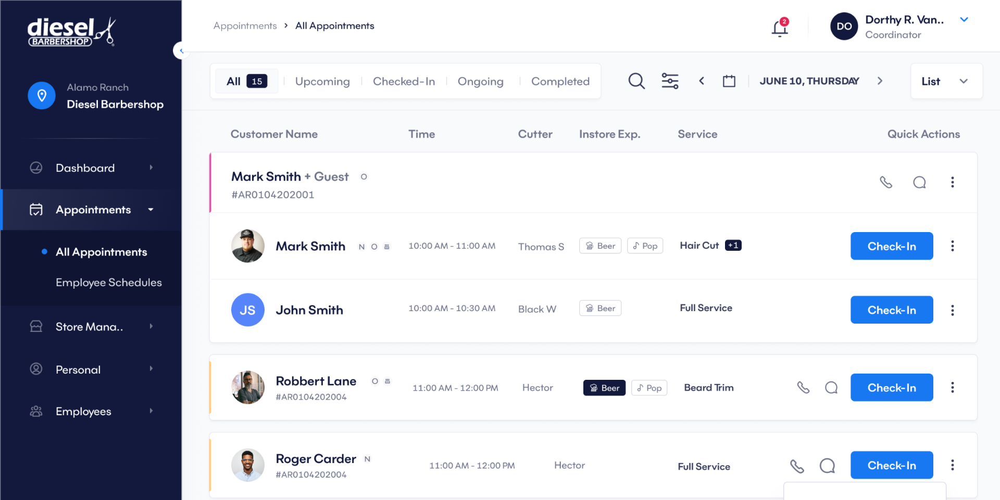

Every company listens to customer feedback. The problem is that many customers never give any. They leave first.

Churn is decided long before the dashboard shows it
By the time churn appears on a dashboard, the decision has already been made. Not in one dramatic moment, but through dozens of small moments of friction.
A little confusion. A little uncertainty. A little extra effort.
Individually, they seem insignificant. Together, they become churn.
When growth slows, teams blame the wrong things
Pricing, marketing and features get the attention first, while product friction goes unnoticed. The conversation usually sounds like this:
- Pricing: "We're too expensive."
- Features: "We're missing something."
- Marketing: "We're attracting the wrong audience."
- Sales: "Our demos aren't converting."

Sometimes all four are wrong, and the real problem is inside the product. Metrics tell you where users leave. They rarely tell you why. The visible business problem is often the result of an invisible experience problem.
Three signs your product has a friction problem
You don't need a UX audit to spot friction. The signals are usually hiding in plain sight.
- Users complete onboarding but never return. They got through the tour. They didn't get to anything worth coming back for.
- Support keeps receiving "How do I…" questions. Each one is a place where the product failed to explain itself.
- Experienced users succeed while new users struggle. The product works, but only once you've learned its workarounds.

A real example: booking success from 62% to 80%
Amplify is a booking platform for barbershops. Research showed where the booking journey was breaking: dead ends, repeated actions, and users unsure whether they had actually booked.
The redesign focused on those moments. A clear journey, fewer steps, and enough confidence at each one to finish. Booking success went from 62% to 80%.

The redesign wasn't about making it look better. It was about making it easier to complete.
Before you add the next feature
The most impactful design work isn't making products look better. It's making progress feel easier, because every unnecessary obstacle has a business cost.
Growth doesn't always come from adding something new. Sometimes it comes from making existing journeys easier to complete. So before the next feature goes on the roadmap:
- Identify the friction.
- Understand the cause.
- Design the right solution.
Your users aren't complaining. They're leaving. The work is to notice before the dashboard does.